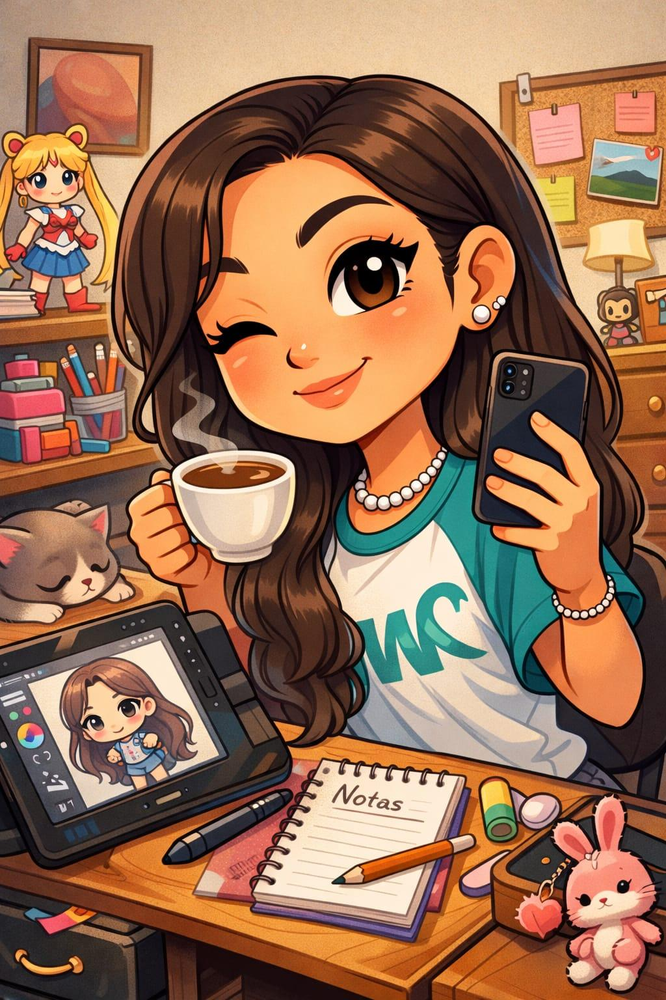

Sobre mí
Soy Karol Sofía Pinzón Ladino, estudio Ingeniería Multimedia y vivo en Funza. Me interesan la programación, el diseño, la tecnología y la creación audiovisual, además de la música, el cine, las peliculas animadas y la fotrografia. Soy una persona creativa, constante y con muchas ganas de seguir creciendo personal y profesionalmente.
Me motiva poder construir un futuro haciendo lo que me gusta. Elegí Ingeniería Multimedia porque es una carrera muy artística y creativa, en la que puedo enfocarme en la realización audiovisual, la animación y el modelado 3D. Mi familia es mi mayor motivación, y quiero lograr estabilidad económica y vivir de lo que me apasiona.
Habilidades
Tengo ideas creativas enfocadas en la realización audiovisual, la animación y el modelado 3D, y técnicas relacionadas con la programación y el uso de herramientas digitales para potenciar mis proyectos multimedia.
Gustos y hobbies
En mi tiempo libre me gusta nadar, montar bicicleta, dibujar, pintar, escuchar música, ver películas y dedicarme a la fotografía, ya que disfruto mucho capturar momentos y expresar mi creatividad.
Mi carrera se relaciona directamente con mis hobbies porque muchas de las cosas que disfruto hacer aumentan mi creatividad. Dibujar, pintar, la fotografía, ver películas y escuchar música influyen en mi mirada artística y en mi interés por la realización audiovisual y la animación. Además, la natación y el ciclismo me ayudan a mantener un equilibrio, calma, disciplina y constancia, cualidades que también aplico en mis proyectos de Ingeniería Multimedia.
Formación
Fundación Universitaria Compensar
Bachiller y técnico en comercio - Colegio Técnico Industrial Corazón de María.
Proyectos
Proyecto 2
Proyecto 3

Contacto
Correo: kspinzon@ucompensar.edu.co
Teléfono: +57 316 6026911
Ciudad: Funza, Colombia
Metas Profesionales
Meta corto plazo
Mi meta para este semestre es reforzar mis conocimientos en HTML, CSS, modelado 3D y matemáticas, mejorar mis notas académicas y seguir desarrollando mis habilidades creativas en Ingeniería Multimedia.
Meta a mediano plazo
Mi meta profesional futura es vivir de la multimedia, trabajar en proyectos de realización audiovisual, animación y modelado 3D, alcanzar estabilidad económica, seguir creciendo academicamente y personalmente.